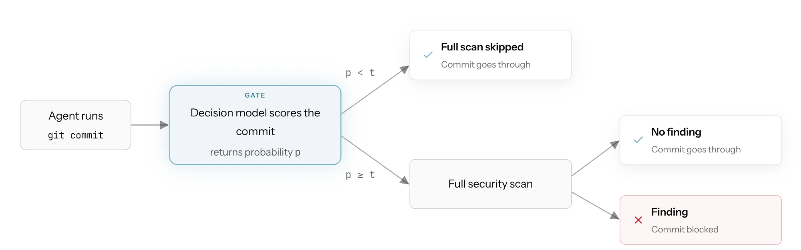
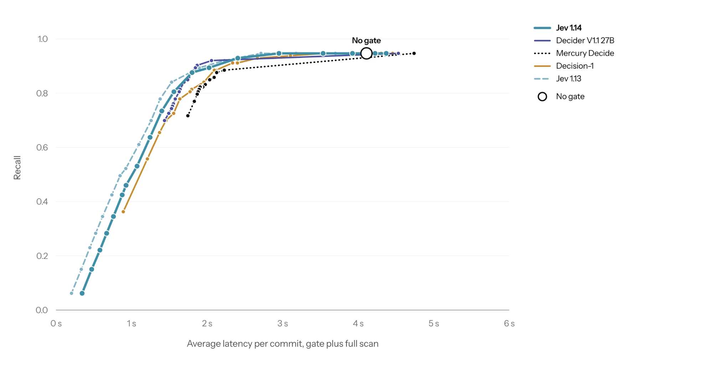
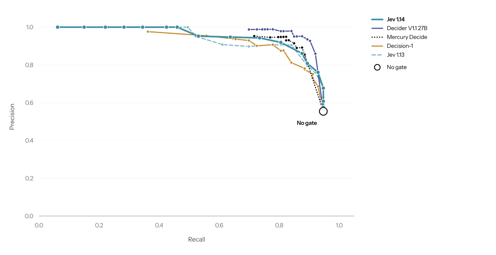
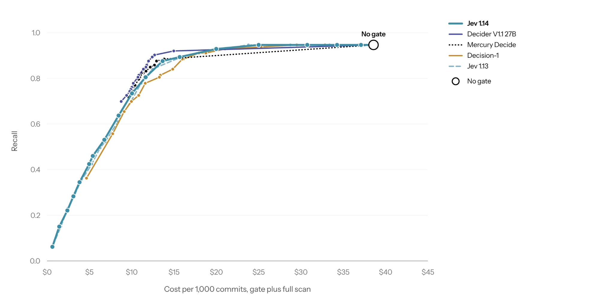
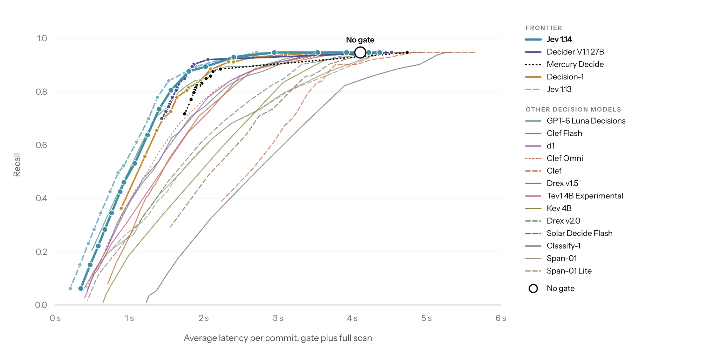
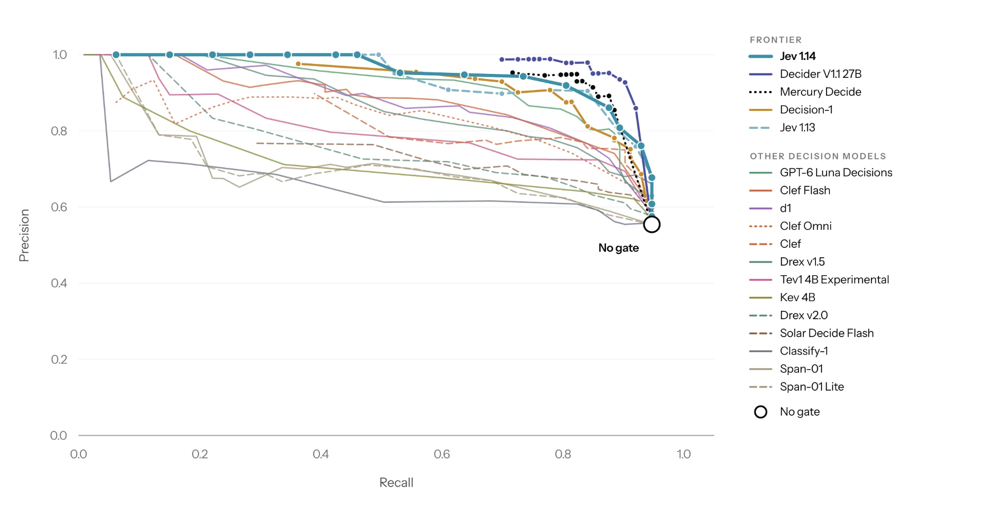
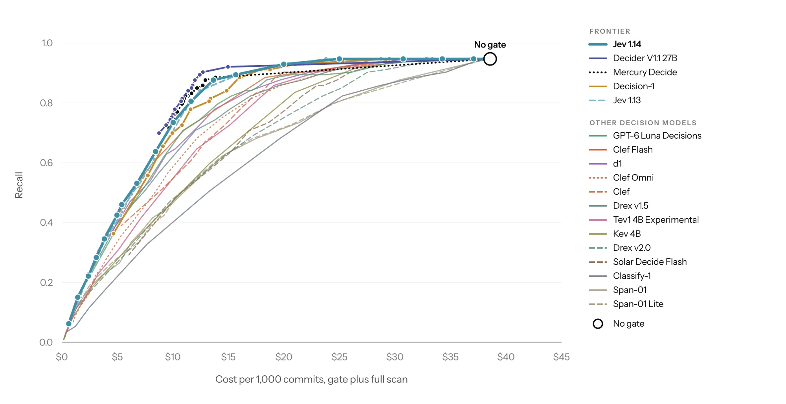

Originally published on the Corridor blog.
Corridor scans every change inside the coding agent's loop, checking it against guardrails right before commit so issues get caught before a PR ever exists. Earlier this month, we demonstrated how we use TypeSafe's Jev as a gating mechanism to decide when to run this scan. We found that using Jev in this manner halves the cost of this task and reduces unnecessary scans, while maintaining precision.
Since our initial analysis, numerous decision models have been released. In the last two weeks, OpenAI (Decisions API), Microsoft (Microsoft-Decision-1), and Perplexity (Perplexity Decider) have all released models to solve decision tasks.
However, these releases have not been adequately evaluated for the security-minded tasks we are interested in here at Corridor. The standard benchmark for decision models over recent weeks has been Jevbench, which offers only 20 samples tagged as safety and security. These 20 samples are also mostly unrealistic: six of them check whether a model ignores injected instructions that the prompt already labels as untrusted, and two are trivial 2FA lookups. None of these tasks measure real security knowledge or unprompted threat detection in the wild.
Additionally, these decision model releases report a single metric that encapsulates overall model performance. They don't separate out sub-categories like security, making their results difficult to interpret for our use case.
In this blogpost, we evaluate the frontier decision models as decision gates for our security enforcement scan.
Decision Models
A decision model takes a program state and a typed question and returns a decision with a probability, in a single forward pass. The probability is trained to reflect how likely the claim is to hold, not produced as a side effect of generating text, so it can be thresholded directly: raise the threshold to skip more commits, lower it to catch more vulnerabilities, with no prompt changes.
We use one as a gate in front of our security enforcement scan. Each commit's diff goes to the model with a single claim, "the code in the state contains a security vulnerability." If the probability is below the threshold, the commit passes without the full scan; otherwise the scan runs as before. In our first post, this cut scan cost in half and raised precision with little loss in recall, and Jev beat every other LLM we tested at this task.
Experimental setup
Our security enforcement gate makes one decision per commit: is the diff vulnerable? If the gate returns no (p < t), the commit is marked not vulnerable and the full scan never runs. If the gate returns yes (p ≥ t), the security enforcement scan runs, and the commit is marked vulnerable if the scan reports a security vulnerability.

In our experiments, we consider nineteen decision models to use as gates, described in the table in the Appendix. Every model was called through the OpenRouter API, except Jev 1.13, Jev 1.14, and GPT-6 Luna Decisions, which we called through the vendors' own APIs.
Benchmark and Metrics
We ran each security enforcement gate configuration on an internal security enforcement scan benchmark constructed using commits from open-source and synthetic sources. Ground truth labels of whether a diff contains security findings were assigned using a panel of LLM judges, chosen for their alignment with human ground truth labels. They are described in the following table:
| Model | Reasoning |
|---|---|
| gemini-3.1-pro-preview | N/A |
| gpt-6-astra | High |
| kimi-k3 | High |
We measure latency per commit as gate latency + security enforcement scan latency when the gate decides to call our security enforcement scan, or just gate latency when it skips the scan, averaged over all commits. Cost is measured as per 1,000 commits at API list price. This is the exact same setup as our original decision model blogpost.
Results
In this section we provide three plots: recall versus latency (Figure 2), precision versus recall (Figure 3), and recall versus cost (Figure 4). In general, along the frontier, using a gate decreases latency and cost, increases precision, and minimally decreases recall. We found that Decider V1.1 27B, Mercury Decide, Jev 1.14, and Decision-1 lead the frontier for our task.



Key Findings
Perplexity's Decider and TypeSafe's Jev lead the recall–latency frontier. For any fixed latency, cost, or precision, Decider V1.1 27B and Jev 1.14 catch more vulnerable commits than any other gate we tested.
Most decision models are not usable security scanner gates. Of the gates considered, only four beat the best LLM gates from our first post: Decider V1.1 27B, Mercury Decide, Jev 1.14, and Decision-1. The rest perform similarly to or worse than the LLM gates in the first post.
The size of the LLM backbone does not imply a stronger decision gate. In two vendor families, the larger model scores below the smaller. Cloudflare Clef Flash (9B) at 0.910 AUROC beats Clef (27B) at 0.847.
Conclusion
We find that Decider V1.1 27B, Mercury Decide, Jev 1.14, and Decision-1 lead the frontier for our security scan enforcement task, while most other available decision models perform at or below raw LLM performance.
Our previous results demonstrated that Jev 1.13 was the model to use as a gate for this task. However, the area of decision models is growing rapidly, with new models being released every week and new ways to apply them across Corridor to reduce the cost and latency of our product. We'll keep re-running this benchmark as new models land, so subscribe to our blog for updates.
Appendix
Models
| Model | Creator | Release date |
|---|---|---|
| Jev 1.13 | TypeSafe AI | 2026-09-18 |
| Jev 1.14 | TypeSafe AI | 2026-10-14 |
| GPT-6 Luna Decisions (OpenAI Decisions API) | OpenAI | 2026-09-29 |
| Microsoft-Decision-1 | Microsoft | 2026-10-08 |
| Decider V1.1 27B | Perplexity | 2026-10-07 |
| Mercury Decide | Inception | 2026-09-30 |
| d1 | Liquid AI | 2026-10-01 |
| Clef Flash | Cloudflare | 2026-10-01 |
| Clef | Cloudflare | 2026-10-01 |
| Clef Omni | Cloudflare | 2026-10-09 |
| Drex v1.5 | Nace.AI | 2026-10-09 |
| Drex v2.0 | Nace.AI | 2026-10-12 |
| Tev1 4B Experimental | Together AI | 2026-09-30 |
| Kev 4B | Jared Palmer (open weights) | 2026-09-25 |
| Solar Decide | Upstage | 2026-09-28 |
| Solar Decide Flash | Upstage | 2026-10-08 |
| Classify-1 | ScaleDown | 2026-10-13 |
| Span-01 | Respan | 2026-09-26 |
| Span-01 Lite | Respan | 2026-09-26 |
Full Results


